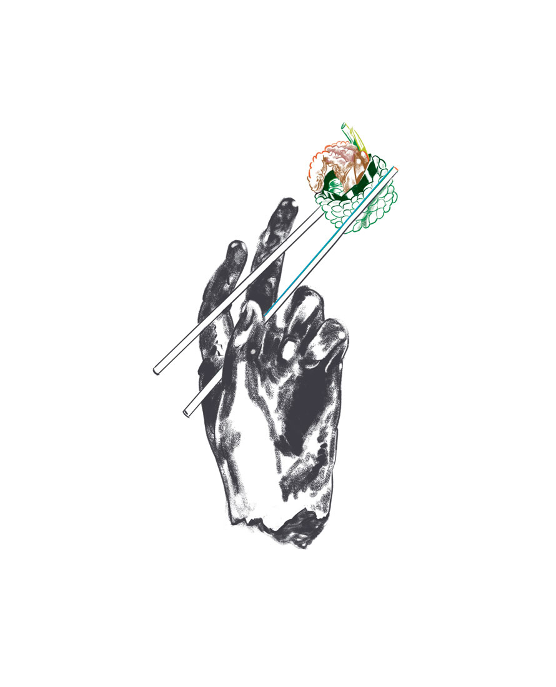
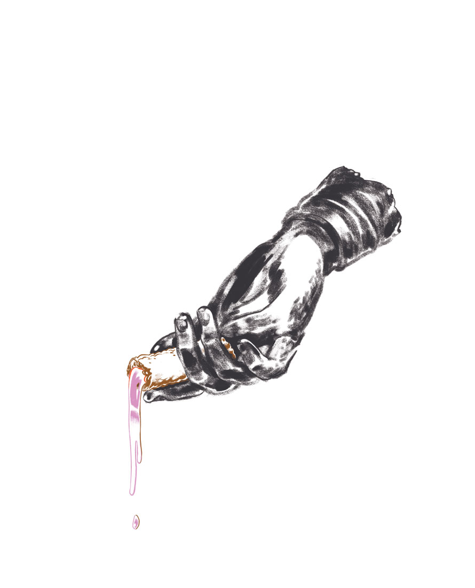

The Suburbs Issue
Illustrations
2017
Opener and spot illustrations for Lucky Peach's last issue, which was themed around eating in the suburbs. This essay, by John Birdsall, is about his struggle to reconcile his big-city ambitions and elitist notion of food review culture with the realities of his suburban locale.


